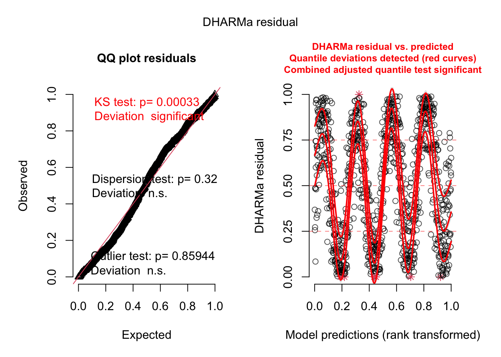
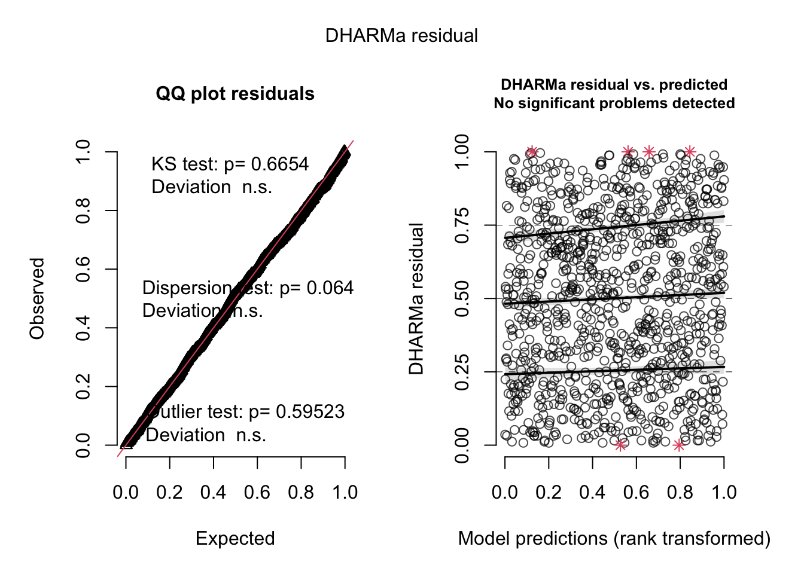
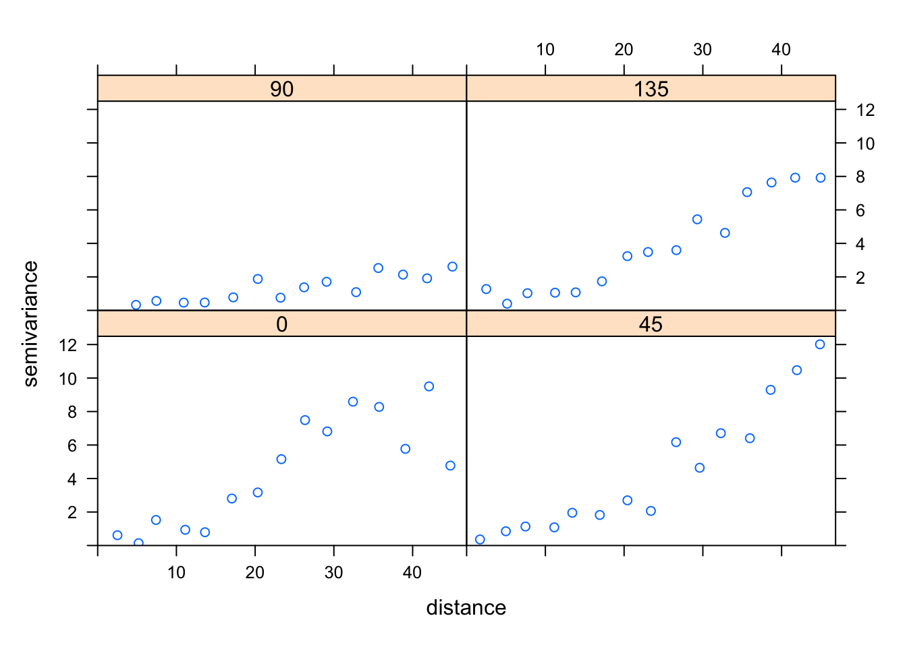
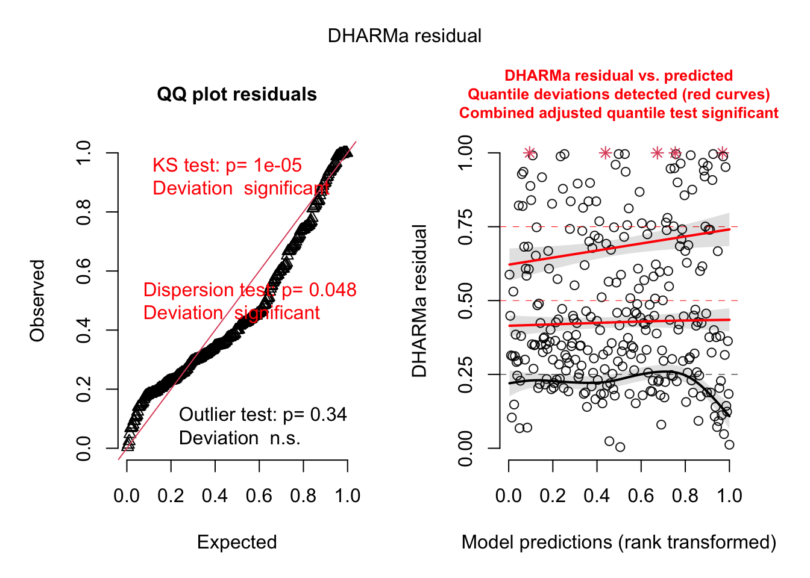
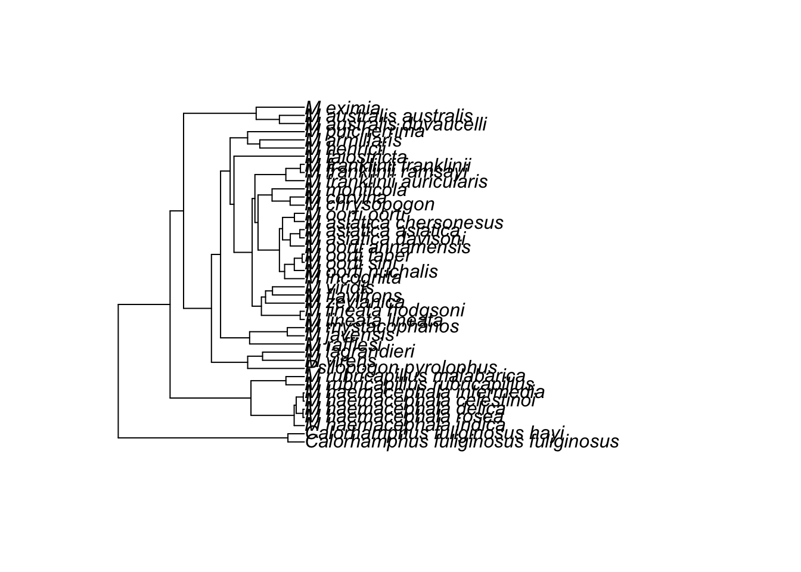
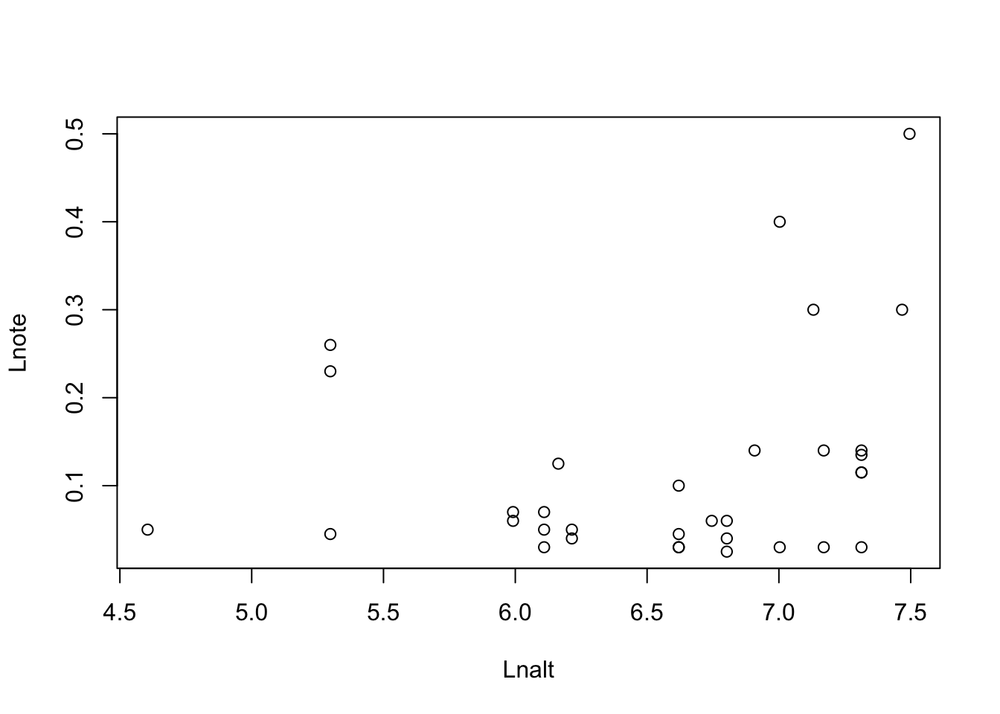

10 Correlation structures
10.1 General Idea
Except for the random effects, we have so far assumed that residual errors are independent. However, that must not always be the case - we may find that residuals show autocorrelation.
Note
Correlation means that one variable correlates with another. Autocorrelation means that data points of one variable that are close to each other have similar values. This implies that autocorrelation is only defined if there is a “distance relationship” between observations.
Autocorrelation can always occur if we have a distance relationship between observations. Apart from random effects, where distance is expressed by group, common examples of continuous distance relationships include:
- Random effects (distance = group)
- Spatial distance.
- Temporal distance.
- Phylogenetic distance.
Here a visualization from Roberts et al., 2016 (reproduced as OA, copyright: the authors).
10.1.1 Models to deal with autocorrelation
If we find autocorrelation in the residuals of our model, there can be several reasons, which we can address by different structures.
Important
In the context of regression models, we are never interested in the autocorrelation of the response / predictors per se, but only in the residuals. Thus, it doesn’t make sense to assume that you need a spatial model only because you have a spatially autocorrelated signal.
Autocorrelation can occur because we have a spatially correlated misfit, i.e. there is a trend in the given space (e.g. time, space, phylogeny). If this is the case, de-trending the model (with a linear regression term or a spline) will remove the residual autocorrelation. We should always de-trend first because we consider moving to a model with a residual correlation structure.
Only after accounting for the trend, we should test if there is a residual spatial / temporal / phylogenetic autocorrelation. If that is the case, we would usually use a so-called conditional autoregressive (CAR) structures. In these models, we make parametric assumptions for how the correlation between data points falls off with distance. When we speak about spatial / temporal / phylogenetic regressions, we usually refer to these or similar models.
10.1.2 R implementation
To de-trend, you can just use standard regression terms or splines on time or space. For the rest of this chapter, we will concentrate on how to specify “real” correlation structures. However, in the case studies, you should always de-trend first.
To account for “real” autocorrelation of residuals, similar as for the variance modelling, we can add correlation structures
- for normal responses in
nlme::gls, see https://stat.ethz.ch/R-manual/R-devel/library/nlme/html/corClasses.html - for GLMs using
glmmTMB, see https://cran.r-project.org/web/packages/glmmTMB/vignettes/covstruct.html.
The following pages provide examples and further comments on how to do this.
Note
Especially for spatial models, both nlme and glmmTMB are relatively slow. Therea are a large number of specialized packages that deal in particular with the problem of spatial models, including MASS::glmmPQL, BRMS, INLA, spaMM, and many more. To keep things simple and concentrate on the principles, however, we will stick with the packages you already know.
10.2 Temporal Correlation Structures
To introduce temporal autoregressive models, let’s simulate some data first. The most simple (and common) temporal structure is the AR1 model, aka autoregressive model with lag 1. The AR1 assumes that the next data point (or residual) originates from a weighted mean of the last data point and a residual normal distribution in the form
\[ x_{t+1} = a \cdot x_t + (1-a) \cdot \epsilon \]
Let’s simulate some data according to this model
# simulate temporally autocorrelated data
AR1sim<-function(n, a){
x = rep(NA, n)
x[1] = 0
for(i in 2:n){
x[i] = a * x[i-1] + (1-a) * rnorm(1)
}
return(x)
}
set.seed(123)
obs = AR1sim(1000, 0.9)
plot(obs)
As we can see, we have a temporal correlation here. As we have not modeled / specified any further predictors, the correlation in the signal will transform directly in the correlations of the residuals if we fit a model:
fit = lm(obs~1)
summary(fit)
Call:
lm(formula = obs ~ 1)
Residuals:
Min 1Q Median 3Q Max
-0.58485 -0.14315 0.00559 0.13729 0.66317
Coefficients:
Estimate Std. Error t value Pr(>|t|)
(Intercept) 0.017019 0.006745 2.523 0.0118 *
---
Signif. codes: 0 '***' 0.001 '**' 0.01 '*' 0.05 '.' 0.1 ' ' 1
Residual standard error: 0.2133 on 999 degrees of freedomNote that the estimate of the intercept is significant, although we started the simulation at zero. Let’s look at the residuals, which have the same autocorrelation as the data.
plot(residuals(fit))
We can quantify the autocorrelation by the acf function, which quantifies correlation between observations as a function of their lag (temporal distance). Note that although we modeled only a lag of 1, we will get correlations with many lags, because the correlation effect “trickles down”.
acf(residuals(fit))
To check what the actual underlying model is, it may be useful to plot the partial correlation coefficient, which is estimated by fitting autoregressive models of successively higher orders and checking their residuals.
pacf(residuals(fit))
Here, we see that we actually only have a correlation with lag 1. You can also check for temporal correlation with the DHARMa package
library(DHARMa)This is DHARMa 0.4.6. For overview type '?DHARMa'. For recent changes, type news(package = 'DHARMa')testTemporalAutocorrelation(fit, time = 1:1000)
Durbin-Watson test
data: simulationOutput$scaledResiduals ~ 1
DW = 0.25973, p-value < 2.2e-16
alternative hypothesis: true autocorrelation is not 0
Note
Remember: in general, for spatial / temporal data, there are two processes that can created residual autocorreation:
- There is a spatial misfit trend in time / space, which creates a correlation in space / time.
- There truly is a spatial correlation, after accounting for the trend.
Unfortunately, the distinction between a larger trend and a correlation is quite fluid. Nevertheless, one should always first check for and remove the trend, typically by including time/space as a predictor, potentially in a flexible way (GAMs come in handy). After this is done, we can fit a model with a temporally/spatially correlated error.
Let’s see how we can fit the AR1 model to data. First, with nlme
library(nlme)
fitGLS = gls(obs~1, corr = corAR1(0.771, form = ~ 1))
summary(fitGLS)Generalized least squares fit by REML
Model: obs ~ 1
Data: NULL
AIC BIC logLik
-1773.104 -1758.384 889.552
Correlation Structure: AR(1)
Formula: ~1
Parameter estimate(s):
Phi
0.8865404
Coefficients:
Value Std.Error t-value p-value
(Intercept) 0.01620833 0.02741235 0.5912784 0.5545
Standardized residuals:
Min Q1 Med Q3 Max
-2.72610052 -0.66439347 0.02987808 0.64460052 3.09922846
Residual standard error: 0.2142402
Degrees of freedom: 1000 total; 999 residualSecond, with glmmTMB
library(glmmTMB)Warning in checkMatrixPackageVersion(): Package version inconsistency detected.
TMB was built with Matrix version 1.4.1
Current Matrix version is 1.5.4.1
Please re-install 'TMB' from source using install.packages('TMB', type = 'source') or ask CRAN for a binary version of 'TMB' matching CRAN's 'Matrix' packageWarning in checkDepPackageVersion(dep_pkg = "TMB"): Package version inconsistency detected.
glmmTMB was built with TMB version 1.9.3
Current TMB version is 1.9.1
Please re-install glmmTMB from source or restore original 'TMB' package (see '?reinstalling' for more information)time <- factor(1:1000) # time variable
group = factor(rep(1,1000)) # group (for multiple time series)
fitGLMMTMB = glmmTMB(obs ~ ar1(time + 0 | group))Warning in glmmTMB(obs ~ ar1(time + 0 | group)): use of the 'data' argument is
recommendedWarning: '.T2Cmat' is deprecated.
Use '.T2CR' instead.
See help("Deprecated") and help("Matrix-deprecated").summary(fitGLMMTMB) Family: gaussian ( identity )
Formula: obs ~ ar1(time + 0 | group)
AIC BIC logLik deviance df.resid
-1776.7 -1757.1 892.4 -1784.7 996
Random effects:
Conditional model:
Groups Name Variance Std.Dev. Corr
group time1 0.0449382 0.21199 0.89 (ar1)
Residual 0.0002047 0.01431
Number of obs: 1000, groups: group, 1
Dispersion estimate for gaussian family (sigma^2): 0.000205
Conditional model:
Estimate Std. Error z value Pr(>|z|)
(Intercept) 0.01619 0.02740 0.591 0.555If you check the results, you can see that
- Both models correctly estimate the AR1 parameter
- The p-value for the intercept is in both models n.s., as expected
Trend and autocorrelation with glmmTMB
As I mentioned earlier, first detrend and then add correlation structure if there is autocorrelation. After both steps we should no longer see any pattern in the conditional residuals. Unfortunately, checking the conditional residuals is a bit complicated because glmmTMB does not support conditional simulations, while lme4 does, but it does not support correlation structures. However, there is a workaround.
Let’s start with a small simulation with a time trend and autocorrelation:
time = 1:1000/100
y = time +2*(sin(time/0.4)) + rnorm(1000)
data =
data.frame(y = y, time = time, timeF = as.factor(1:1000), group = as.factor(1))
plot(y ~time)
- Detrend
fit1 = glmmTMB(y~time, data = data)
res = simulateResiduals(fit1, plot = TRUE)testTemporalAutocorrelation(res, time = data$time)
Durbin-Watson test
data: simulationOutput$scaledResiduals ~ 1
DW = 0.66181, p-value < 2.2e-16
alternative hypothesis: true autocorrelation is not 0Test for temporal autocorrelation is siginificant -> add autoregressive structure
- Add autoregressive structure
fit2 = glmmTMB(y~time + ar1(0+timeF|group), data = data)Warning: '.T2Cmat' is deprecated.
Use '.T2CR' instead.
See help("Deprecated") and help("Matrix-deprecated").res = simulateResiduals(fit2, plot = TRUE)
The residual plot did not change because glmmTMB:::simulate.glmmTMB does not generate conditional predictions. But we can generate them ourselves:
- Create conditional predictions and simulations
We can create a custom DHARMa object with our own simulations:
pred = predict(fit2, re.form = NULL)
simulations = sapply(1:250, function(i) rnorm(1000, pred, summary(fit2)$sigma))
res = createDHARMa(simulations, data$y, pred)
plot(res)
Voila, the residuals look good now!
Excercise
Look at the hurricane study that we used before, which is, after all, temporal data. This data set is located in DHARMa.
library(DHARMa)
fit = glmmTMB(alldeaths ~ scale(MasFem) *
(scale(Minpressure_Updated_2014) + scale(NDAM)),
data = hurricanes, family = nbinom2)
# Residual checks with DHARMa.
res = simulateResiduals(fit)
# Checking for temporal autocorrelation
res2 = recalculateResiduals(res, group = hurricanes$Year)
testTemporalAutocorrelation(res2, time = unique(hurricanes$Year))
Durbin-Watson test
data: simulationOutput$scaledResiduals ~ 1
DW = 2.5518, p-value = 0.04758
alternative hypothesis: true autocorrelation is not 0Add an AR1 term to the model!
10.3 Spatial Correlation Structures
Spatial models work very similar to the temporal models. This time, we start directly with an example, using a data set with the thickness of coal seams, that we try to predict with a spatial (soil) predictor.
library(EcoData)
plot(thick ~ soil, data = thickness)
Let’s fit a simple LM to this
fit = lm(thick ~ soil, data = thickness)
summary(fit)
Call:
lm(formula = thick ~ soil, data = thickness)
Residuals:
Min 1Q Median 3Q Max
-6.0414 -1.1975 0.0876 1.4836 4.9584
Coefficients:
Estimate Std. Error t value Pr(>|t|)
(Intercept) 31.9420 3.1570 10.118 1.54e-15 ***
soil 2.2552 0.8656 2.605 0.0111 *
---
Signif. codes: 0 '***' 0.001 '**' 0.01 '*' 0.05 '.' 0.1 ' ' 1
Residual standard error: 2.278 on 73 degrees of freedom
Multiple R-squared: 0.08508, Adjusted R-squared: 0.07254
F-statistic: 6.788 on 1 and 73 DF, p-value: 0.01111DHARMa checks:
res = simulateResiduals(fit)
testSpatialAutocorrelation(res, x = thickness$north, y = thickness$east)
DHARMa Moran's I test for distance-based autocorrelation
data: res
observed = 0.210870, expected = -0.013514, sd = 0.021940, p-value <
2.2e-16
alternative hypothesis: Distance-based autocorrelationFor spatial data, we often look at spatial variograms, which are similar to an acf but in spatial directions
library(gstat)
tann.dir.vgm = variogram(residuals(fit) ~ 1,
loc =~ east + north, data = thickness,
alpha = c(0, 45, 90, 135))
plot(tann.dir.vgm)
Both the DHARMa plots and the variograms are more indicative of a spatial trend. Let’s remove this with a 2d-spine, called a tensor spline:
library(mgcv)
fit1 = gam(thick ~ soil + te(east, north) , data = thickness)
summary(fit1)
Family: gaussian
Link function: identity
Formula:
thick ~ soil + te(east, north)
Parametric coefficients:
Estimate Std. Error t value Pr(>|t|)
(Intercept) 39.68933 0.26498 149.780 <2e-16 ***
soil 0.12363 0.07275 1.699 0.0952 .
---
Signif. codes: 0 '***' 0.001 '**' 0.01 '*' 0.05 '.' 0.1 ' ' 1
Approximate significance of smooth terms:
edf Ref.df F p-value
te(east,north) 21.09 22.77 721.3 <2e-16 ***
---
Signif. codes: 0 '***' 0.001 '**' 0.01 '*' 0.05 '.' 0.1 ' ' 1
R-sq.(adj) = 0.996 Deviance explained = 99.7%
GCV = 0.033201 Scale est. = 0.022981 n = 75plot(fit1, pages = 0, lwd = 2)
We can check the model again, and the problem is gone
res = simulateResiduals(fit1)Registered S3 method overwritten by 'GGally':
method from
+.gg ggplot2Registered S3 method overwritten by 'mgcViz':
method from
+.gg GGallytestSpatialAutocorrelation(res, x = thickness$north, y = thickness$east)
DHARMa Moran's I test for distance-based autocorrelation
data: res
observed = -0.024242, expected = -0.013514, sd = 0.021860, p-value =
0.6236
alternative hypothesis: Distance-based autocorrelationAlmost the same, but simpler:
fit = lm(thick ~ soil + north + I(north^2), data = thickness)If we would have still seen a signal, we should have fit an autoregressive model. Here it’s not necessary, but just to show you the syntax - first nlme:
fit2 = gls(thick ~ soil , correlation = corExp(form =~ east + north) , data = thickness)
summary(fit2)Generalized least squares fit by REML
Model: thick ~ soil
Data: thickness
AIC BIC logLik
164.3474 173.5092 -78.17368
Correlation Structure: Exponential spatial correlation
Formula: ~east + north
Parameter estimate(s):
range
719.4122
Coefficients:
Value Std.Error t-value p-value
(Intercept) 42.81488 5.314542 8.056176 0.0000
soil 0.02662 0.199737 0.133289 0.8943
Correlation:
(Intr)
soil -0.12
Standardized residuals:
Min Q1 Med Q3 Max
-1.5811122 -0.7276873 -0.5028102 -0.2092991 0.3217326
Residual standard error: 5.573088
Degrees of freedom: 75 total; 73 residualSecond, for glmmTMB. Here, we again have to prepare the data first
thickness$pos <- numFactor(thickness$east,
thickness$north)
thickness$group <- factor(rep(1, nrow(thickness)))
fit3 = glmmTMB(thick ~ soil + exp(pos + 0 | group) , data = thickness)Warning: '.T2Cmat' is deprecated.
Use '.T2CR' instead.
See help("Deprecated") and help("Matrix-deprecated").The output of summary is a bit chunky, which is why I suppress it here
summary(fit3)If you wonder why there is such a large correlation matrix displayed: both the AR1 and the exp(pos + 0 | group) structure impose a particular correlation structure on the random effects. Per default, glmmTMB shows correlations of random effects if they are estimated. In the case of the AR1 structure, the programmers apparently surpressed this, and just showed the stimate of the AR1 parameter. Here, however, they didn’t implement this feature, so you see the entire correlation structure, which is, admittedly, less helpful and should be changed.
Solution
?EcoData::plantcounts
plants_sf <- plantcounts
str(plants_sf)'data.frame': 285 obs. of 6 variables:
$ tk : int 65341 65342 65343 65344 65351 65352 65353 65354 65361 65362 ...
$ area : num 33.6 33.6 33.6 33.6 33.6 ...
$ richness: int 767 770 741 756 550 434 433 448 527 505 ...
$ agrarea : num 0.488 0.431 0.484 0.598 0.422 ...
$ lon : num 11.4 11.5 11.4 11.5 11.5 ...
$ lat : num 49.5 49.5 49.4 49.4 49.5 ...plants_sf$agrarea_scaled <- scale(plants_sf$agrarea)
plants_sf$longitude <- plants_sf$lon
plants_sf$latitude <- plants_sf$lat
library(sf)
plants_sf <- sf::st_as_sf(plants_sf, coords = c('longitude', 'latitude'), crs
= st_crs("+proj=longlat +ellps=bessel
+towgs84=606,23,413,0,0,0,0 +no_defs"))
library(mapview)
mapview(plants_sf["richness"], map.types = "OpenTopoMap")fit <- glmmTMB::glmmTMB(richness ~ agrarea_scaled + offset(log(area)),
family = nbinom1, data = plants_sf)
summary(fit) Family: nbinom1 ( log )
Formula: richness ~ agrarea_scaled + offset(log(area))
Data: plants_sf
AIC BIC logLik deviance df.resid
3348.8 3359.8 -1671.4 3342.8 282
Dispersion parameter for nbinom1 family (): 14.3
Conditional model:
Estimate Std. Error z value Pr(>|z|)
(Intercept) 2.66825 0.01047 254.79 < 2e-16 ***
agrarea_scaled -0.03316 0.01021 -3.25 0.00117 **
---
Signif. codes: 0 '***' 0.001 '**' 0.01 '*' 0.05 '.' 0.1 ' ' 1library(DHARMa)
res <- simulateResiduals(fit)
plot(res)
testSpatialAutocorrelation(res, x = plants_sf$lon, y = plants_sf$lat)
DHARMa Moran's I test for distance-based autocorrelation
data: res
observed = 0.0958792, expected = -0.0035211, sd = 0.0047788, p-value <
2.2e-16
alternative hypothesis: Distance-based autocorrelationfit2<-mgcv::gam(richness ~ agrarea_scaled + te(lon, lat),
offset(log(area)), family = nb, data = plants_sf)
summary(fit2)
Family: Negative Binomial(67.736)
Link function: log
Formula:
richness ~ agrarea_scaled + te(lon, lat)
Parametric coefficients:
Estimate Std. Error z value Pr(>|z|)
(Intercept) 6.183373 0.004096 1509.72 < 2e-16 ***
agrarea_scaled -0.024366 0.005355 -4.55 5.37e-06 ***
---
Signif. codes: 0 '***' 0.001 '**' 0.01 '*' 0.05 '.' 0.1 ' ' 1
Approximate significance of smooth terms:
edf Ref.df Chi.sq p-value
te(lon,lat) 22.53 23.76 850.3 <2e-16 ***
---
Signif. codes: 0 '***' 0.001 '**' 0.01 '*' 0.05 '.' 0.1 ' ' 1
R-sq.(adj) = 0.413 Deviance explained = 50.2%
-REML = 5622.6 Scale est. = 1 n = 285plot(fit2)
library(mgcViz)
b <- getViz(fit2)
print(plot(b, allTerms = F), pages = 1) # Calls print.plotGam()
#plotRGL(sm(b, 1), residuals = TRUE)
res <- simulateResiduals(fit2)
plot(res)
testSpatialAutocorrelation(res, x = plants_sf$lon, y = plants_sf$lat)
DHARMa Moran's I test for distance-based autocorrelation
data: res
observed = -0.0030357, expected = -0.0035211, sd = 0.0047800, p-value =
0.9191
alternative hypothesis: Distance-based autocorrelation10.4 Phylogenetic Structures (PGLS)
This is mostly taken from https://lukejharmon.github.io/ilhabela/instruction/2015/07/03/PGLS/. The two datasets associated with this example are in the EcoData package.
Perform analysis:
library(EcoData)
library(ape)
library(geiger)
library(nlme)
library(phytools)
library(DHARMa)To plot the phylogenetic tree, use
plot(anolisTree)Regress species traits
# Check whether names are matching in both files.
name.check(anolisTree, anolisData)$tree_not_data
[1] "ahli" "alayoni" "alfaroi" "aliniger"
[5] "allisoni" "allogus" "altitudinalis" "alumina"
[9] "alutaceus" "angusticeps" "argenteolus" "argillaceus"
[13] "armouri" "bahorucoensis" "baleatus" "baracoae"
[17] "barahonae" "barbatus" "barbouri" "bartschi"
[21] "bremeri" "breslini" "brevirostris" "caudalis"
[25] "centralis" "chamaeleonides" "chlorocyanus" "christophei"
[29] "clivicola" "coelestinus" "confusus" "cooki"
[33] "cristatellus" "cupeyalensis" "cuvieri" "cyanopleurus"
[37] "cybotes" "darlingtoni" "distichus" "dolichocephalus"
[41] "equestris" "etheridgei" "eugenegrahami" "evermanni"
[45] "fowleri" "garmani" "grahami" "guafe"
[49] "guamuhaya" "guazuma" "gundlachi" "haetianus"
[53] "hendersoni" "homolechis" "imias" "inexpectatus"
[57] "insolitus" "isolepis" "jubar" "krugi"
[61] "lineatopus" "longitibialis" "loysiana" "lucius"
[65] "luteogularis" "macilentus" "marcanoi" "marron"
[69] "mestrei" "monticola" "noblei" "occultus"
[73] "olssoni" "opalinus" "ophiolepis" "oporinus"
[77] "paternus" "placidus" "poncensis" "porcatus"
[81] "porcus" "pulchellus" "pumilis" "quadriocellifer"
[85] "reconditus" "ricordii" "rubribarbus" "sagrei"
[89] "semilineatus" "sheplani" "shrevei" "singularis"
[93] "smallwoodi" "strahmi" "stratulus" "valencienni"
[97] "vanidicus" "vermiculatus" "websteri" "whitemani"
$data_not_tree
[1] "1" "10" "100" "11" "12" "13" "14" "15" "16" "17" "18" "19"
[13] "2" "20" "21" "22" "23" "24" "25" "26" "27" "28" "29" "3"
[25] "30" "31" "32" "33" "34" "35" "36" "37" "38" "39" "4" "40"
[37] "41" "42" "43" "44" "45" "46" "47" "48" "49" "5" "50" "51"
[49] "52" "53" "54" "55" "56" "57" "58" "59" "6" "60" "61" "62"
[61] "63" "64" "65" "66" "67" "68" "69" "7" "70" "71" "72" "73"
[73] "74" "75" "76" "77" "78" "79" "8" "80" "81" "82" "83" "84"
[85] "85" "86" "87" "88" "89" "9" "90" "91" "92" "93" "94" "95"
[97] "96" "97" "98" "99" # Plot traits.
plot(anolisData[, c("awesomeness", "hostility")])
plot(hostility ~ awesomeness, data = anolisData)
fit = lm(hostility ~ awesomeness, data = anolisData)
summary(fit)
Call:
lm(formula = hostility ~ awesomeness, data = anolisData)
Residuals:
Min 1Q Median 3Q Max
-0.7035 -0.3065 -0.0416 0.2440 0.7884
Coefficients:
Estimate Std. Error t value Pr(>|t|)
(Intercept) 0.10843 0.03953 2.743 0.00724 **
awesomeness -0.88116 0.03658 -24.091 < 2e-16 ***
---
Signif. codes: 0 '***' 0.001 '**' 0.01 '*' 0.05 '.' 0.1 ' ' 1
Residual standard error: 0.3807 on 98 degrees of freedom
Multiple R-squared: 0.8555, Adjusted R-squared: 0.8541
F-statistic: 580.4 on 1 and 98 DF, p-value: < 2.2e-16abline(fit)
Check for phylogenetic signal in residuals.
# Calculate weight matrix for phylogenetic distance.
w = 1/cophenetic(anolisTree)
diag(w) = 0
Moran.I(residuals(fit), w)$observed
[1] 0.05067625
$expected
[1] -0.01010101
$sd
[1] 0.00970256
$p.value
[1] 3.751199e-10Conclusion: signal in the residuals, a normal lm will not work.
You can also check with DHARMa, using this works also for GLMMs
res = simulateResiduals(fit)
testSpatialAutocorrelation(res, distMat = cophenetic(anolisTree))
DHARMa Moran's I test for distance-based autocorrelation
data: res
observed = 0.0509093, expected = -0.0101010, sd = 0.0097304, p-value =
3.609e-10
alternative hypothesis: Distance-based autocorrelationAn old-school method to deal with the problem are the so-called Phylogenetically Independent Contrasts (PICs) (Felsenstein, J. (1985) “Phylogenies and the comparative method”. American Naturalist, 125, 1–15.). The idea here is to transform your data in a way that an lm is still appropriate. For completeness, I show the method here.
# Extract columns.
host = anolisData[, "hostility"]
awe = anolisData[, "awesomeness"]
# Give them names.
names(host) = names(awe) = rownames(anolisData)
# Calculate PICs.
hPic = pic(host, anolisTree)Warning in pic(host, anolisTree): the names of argument 'x' and the tip labels
of the tree did not match: the former were ignored in the analysis.aPic = pic(awe, anolisTree)Warning in pic(awe, anolisTree): the names of argument 'x' and the tip labels of
the tree did not match: the former were ignored in the analysis.# Make a model.
picModel = lm(hPic ~ aPic - 1)
summary(picModel) # Yes, significant.
Call:
lm(formula = hPic ~ aPic - 1)
Residuals:
Min 1Q Median 3Q Max
-1.30230 -0.23485 0.06003 0.34772 0.92222
Coefficients:
Estimate Std. Error t value Pr(>|t|)
aPic -0.91964 0.03887 -23.66 <2e-16 ***
---
Signif. codes: 0 '***' 0.001 '**' 0.01 '*' 0.05 '.' 0.1 ' ' 1
Residual standard error: 0.4263 on 98 degrees of freedom
Multiple R-squared: 0.851, Adjusted R-squared: 0.8495
F-statistic: 559.9 on 1 and 98 DF, p-value: < 2.2e-16# plot results.
plot(hPic ~ aPic)
abline(a = 0, b = coef(picModel))
Now, new school, with a PGLS
pglsModel = gls(hostility ~ awesomeness,
correlation = corBrownian(phy = anolisTree, form =~ species),
data = anolisData, method = "ML")
summary(pglsModel)Generalized least squares fit by maximum likelihood
Model: hostility ~ awesomeness
Data: anolisData
AIC BIC logLik
42.26092 50.07643 -18.13046
Correlation Structure: corBrownian
Formula: ~species
Parameter estimate(s):
numeric(0)
Coefficients:
Value Std.Error t-value p-value
(Intercept) 0.1158895 0.12500397 0.927087 0.3562
awesomeness -0.9196414 0.03886501 -23.662451 0.0000
Correlation:
(Intr)
awesomeness -0.065
Standardized residuals:
Min Q1 Med Q3 Max
-1.49512017 -0.75193433 -0.06672209 0.56527753 2.04613817
Residual standard error: 0.4220369
Degrees of freedom: 100 total; 98 residualcoef(pglsModel)(Intercept) awesomeness
0.1158895 -0.9196414 plot(hostility ~ awesomeness, data = anolisData)
abline(pglsModel, col = "red")
OK, same result, but PGLS is WAY more flexible than PICs. For example, we can include a discrete predictor:
pglsModel2 = gls(hostility ~ ecomorph,
correlation = corBrownian(phy = anolisTree, form =~ species),
data = anolisData, method = "ML")
summary(pglsModel2)Generalized least squares fit by maximum likelihood
Model: hostility ~ ecomorph
Data: anolisData
AIC BIC logLik
235.1126 255.954 -109.5563
Correlation Structure: corBrownian
Formula: ~species
Parameter estimate(s):
numeric(0)
Coefficients:
Value Std.Error t-value p-value
(Intercept) 0.2280018 0.3630767 0.6279713 0.5316
ecomorphGB -0.2737370 0.2128984 -1.2857635 0.2017
ecomorphT -0.2773801 0.3872137 -0.7163490 0.4756
ecomorphTC -0.5457771 0.2449466 -2.2281475 0.0283
ecomorphTG -0.2645627 0.2084928 -1.2689297 0.2076
ecomorphTW -0.5388436 0.2370223 -2.2733878 0.0253
ecomorphU -0.3013944 0.2264264 -1.3310922 0.1864
Correlation:
(Intr) ecmrGB ecmrpT ecmrTC ecmrTG ecmrTW
ecomorphGB -0.385
ecomorphT -0.276 0.360
ecomorphTC -0.369 0.626 0.349
ecomorphTG -0.426 0.638 0.431 0.608
ecomorphTW -0.372 0.626 0.377 0.588 0.641
ecomorphU -0.395 0.597 0.394 0.587 0.647 0.666
Standardized residuals:
Min Q1 Med Q3 Max
-2.57909973 -0.62394508 0.03716963 0.49997446 2.33859983
Residual standard error: 1.05295
Degrees of freedom: 100 total; 93 residualanova(pglsModel2)Denom. DF: 93
numDF F-value p-value
(Intercept) 1 0.0555807 0.8141
ecomorph 6 1.2170027 0.3046# We can even include multiple predictors:
pglsModel3 = gls(hostility ~ ecomorph * awesomeness,
correlation = corBrownian(phy = anolisTree, form =~ species),
data = anolisData, method = "ML")
summary(pglsModel3)Generalized least squares fit by maximum likelihood
Model: hostility ~ ecomorph * awesomeness
Data: anolisData
AIC BIC logLik
53.36917 92.44673 -11.68459
Correlation Structure: corBrownian
Formula: ~species
Parameter estimate(s):
numeric(0)
Coefficients:
Value Std.Error t-value p-value
(Intercept) 0.2740102 0.14336154 1.911323 0.0593
ecomorphGB -0.2079698 0.08757937 -2.374644 0.0198
ecomorphT -0.1751884 0.15478802 -1.131795 0.2609
ecomorphTC -0.2030466 0.10752002 -1.888454 0.0623
ecomorphTG -0.1260964 0.08339737 -1.511994 0.1342
ecomorphTW -0.1600076 0.09700188 -1.649531 0.1027
ecomorphU -0.1244498 0.09457082 -1.315943 0.1917
awesomeness -1.0131496 0.08971063 -11.293529 0.0000
ecomorphGB:awesomeness 0.0750120 0.08289316 0.904924 0.3680
ecomorphT:awesomeness 0.1373797 0.11770513 1.167152 0.2464
ecomorphTC:awesomeness 0.1161086 0.11490811 1.010447 0.3151
ecomorphTG:awesomeness 0.1666831 0.09824670 1.696577 0.0934
ecomorphTW:awesomeness 0.0120495 0.11532810 0.104480 0.9170
ecomorphU:awesomeness 0.0283477 0.10510376 0.269711 0.7880
Correlation:
(Intr) ecmrGB ecmrpT ecmrTC ecmrTG ecmrTW ecmrpU awsmns
ecomorphGB -0.398
ecomorphT -0.289 0.372
ecomorphTC -0.361 0.598 0.357
ecomorphTG -0.435 0.647 0.447 0.579
ecomorphTW -0.377 0.644 0.391 0.579 0.657
ecomorphU -0.403 0.589 0.424 0.546 0.658 0.666
awesomeness -0.104 0.123 0.045 0.078 0.046 0.005 0.108
ecomorphGB:awesomeness 0.129 -0.280 -0.095 -0.171 -0.151 -0.191 -0.184 -0.682
ecomorphT:awesomeness 0.082 -0.085 -0.074 -0.071 -0.036 -0.011 -0.111 -0.716
ecomorphTC:awesomeness 0.102 -0.120 -0.092 -0.359 -0.079 -0.091 -0.136 -0.695
ecomorphTG:awesomeness 0.090 -0.073 -0.023 -0.058 -0.056 -0.036 -0.140 -0.811
ecomorphTW:awesomeness 0.051 -0.124 0.029 -0.054 -0.023 -0.052 -0.006 -0.666
ecomorphU:awesomeness 0.101 -0.129 -0.129 -0.143 -0.133 -0.122 -0.283 -0.672
ecmGB: ecmrT: ecmTC: ecmTG: ecmTW:
ecomorphGB
ecomorphT
ecomorphTC
ecomorphTG
ecomorphTW
ecomorphU
awesomeness
ecomorphGB:awesomeness
ecomorphT:awesomeness 0.516
ecomorphTC:awesomeness 0.519 0.530
ecomorphTG:awesomeness 0.611 0.684 0.609
ecomorphTW:awesomeness 0.535 0.536 0.482 0.569
ecomorphU:awesomeness 0.515 0.535 0.644 0.626 0.480
Standardized residuals:
Min Q1 Med Q3 Max
-1.6656909 -0.7164061 -0.1305515 0.6718348 1.7699106
Residual standard error: 0.3956912
Degrees of freedom: 100 total; 86 residualanova(pglsModel3)Denom. DF: 86
numDF F-value p-value
(Intercept) 1 0.3640 0.5479
ecomorph 6 7.9691 <.0001
awesomeness 1 517.8319 <.0001
ecomorph:awesomeness 6 0.8576 0.5295We can also assume that the error structure follows an Ornstein-Uhlenbeck model rather than Brownian motion. When trying this, however, I noted that the model does not converge due to a scaling problem. We can do a quick fix by making the branch lengths longer. This will not affect the analysis other than rescaling a nuisance parameter.
tempTree = anolisTree
tempTree$edge.length = tempTree$edge.length * 100
pglsModelLambda = gls(hostility ~ awesomeness,
correlation = corPagel(1, phy = tempTree, fixed = FALSE,
form =~ species),
data = anolisData, method = "ML")
summary(pglsModelLambda)Generalized least squares fit by maximum likelihood
Model: hostility ~ awesomeness
Data: anolisData
AIC BIC logLik
43.64714 54.06782 -17.82357
Correlation Structure: corPagel
Formula: ~species
Parameter estimate(s):
lambda
1.01521
Coefficients:
Value Std.Error t-value p-value
(Intercept) 0.1170472 0.12862370 0.909997 0.3651
awesomeness -0.9248858 0.03870928 -23.893129 0.0000
Correlation:
(Intr)
awesomeness -0.062
Standardized residuals:
Min Q1 Med Q3 Max
-1.46625592 -0.74557818 -0.06456682 0.54645141 2.02371257
Residual standard error: 0.4317018
Degrees of freedom: 100 total; 98 residualpglsModelOU = gls(hostility ~ awesomeness,
correlation = corMartins(1, phy = tempTree, form =~ species),
data = anolisData)
summary(pglsModelOU)Generalized least squares fit by REML
Model: hostility ~ awesomeness
Data: anolisData
AIC BIC logLik
50.7625 61.10237 -21.38125
Correlation Structure: corMartins
Formula: ~species
Parameter estimate(s):
alpha
0.003194918
Coefficients:
Value Std.Error t-value p-value
(Intercept) 0.1179388 0.4300640 0.274236 0.7845
awesomeness -0.9148437 0.0384949 -23.765320 0.0000
Correlation:
(Intr)
awesomeness -0.02
Standardized residuals:
Min Q1 Med Q3 Max
-1.11558553 -0.54574106 -0.05696661 0.40461428 1.48285458
Residual standard error: 0.5740297
Degrees of freedom: 100 total; 98 residualOther example: http://schmitzlab.info/pgls.html.
For fitting PGLS with various models, you should also consider the caper package.
Excercise
The following exercise uses data from a study by Corboda et al., 2017, which examined the influence of environmental factors on the evolution of song in an group of Asian bird species called “barbets.” The following code cleans the raw data available from the EcoData package:
library(ape)
library(EcoData)
dat = barbetData
tree = barbetTree
dat$species = row.names(dat)
plot(tree)
# dropping species in the phylogeny for which we don't have data
obj<-geiger::name.check(tree,dat)
reducedTree<-drop.tip(tree, obj$tree_not_data)
geiger::name.check(reducedTree,dat)[1] "OK"Task: Check if there is a relationship between altitude at which a species is found and the length of the note in its song, which uses the variables Lnote~Lnalt
Solution
plot(Lnote~Lnalt, data = dat)
fit <- lm(Lnote~ scale(Lnalt), data = dat)
summary(fit)
Call:
lm(formula = Lnote ~ scale(Lnalt), data = dat)
Residuals:
Min 1Q Median 3Q Max
-0.11597 -0.06798 -0.03097 0.01019 0.34676
Coefficients:
Estimate Std. Error t value Pr(>|t|)
(Intercept) 0.11652 0.01994 5.844 1.91e-06 ***
scale(Lnalt) 0.02870 0.02025 1.418 0.166
---
Signif. codes: 0 '***' 0.001 '**' 0.01 '*' 0.05 '.' 0.1 ' ' 1
Residual standard error: 0.1145 on 31 degrees of freedom
Multiple R-squared: 0.06087, Adjusted R-squared: 0.03058
F-statistic: 2.009 on 1 and 31 DF, p-value: 0.1663library(effects)Loading required package: carDatalattice theme set by effectsTheme()
See ?effectsTheme for details.plot(allEffects(fit,partial.residuals = T))Warning in Analyze.model(focal.predictors, mod, xlevels, default.levels, : the
predictor scale(Lnalt) is a one-column matrix that was converted to a vector
Bit of a misfit, to get a good fit, after playing around, I logged the response and added a quadratic and a cubic effect - you can probably also find other solutions.
fit <- lm(log(Lnote) ~ scale(Lnalt) + I(scale(Lnalt)^2) + I(scale(Lnalt)^3), data = dat)
summary(fit)
Call:
lm(formula = log(Lnote) ~ scale(Lnalt) + I(scale(Lnalt)^2) +
I(scale(Lnalt)^3), data = dat)
Residuals:
Min 1Q Median 3Q Max
-1.54583 -0.34238 -0.05857 0.41449 1.81049
Coefficients:
Estimate Std. Error t value Pr(>|t|)
(Intercept) -3.04435 0.19067 -15.967 6.64e-16 ***
scale(Lnalt) -0.02132 0.22516 -0.095 0.92520
I(scale(Lnalt)^2) 0.76725 0.21638 3.546 0.00135 **
I(scale(Lnalt)^3) 0.27479 0.10296 2.669 0.01233 *
---
Signif. codes: 0 '***' 0.001 '**' 0.01 '*' 0.05 '.' 0.1 ' ' 1
Residual standard error: 0.7305 on 29 degrees of freedom
Multiple R-squared: 0.3376, Adjusted R-squared: 0.2691
F-statistic: 4.928 on 3 and 29 DF, p-value: 0.006911plot(allEffects(fit,partial.residuals = T))Warning in Analyze.model(focal.predictors, mod, xlevels, default.levels, : the
predictors scale(Lnalt), I(scale(Lnalt)^2), I(scale(Lnalt)^3) are one-column
matrices that were converted to vectors
Warning in Analyze.model(focal.predictors, mod, xlevels, default.levels, : the
predictors scale(Lnalt), I(scale(Lnalt)^2), I(scale(Lnalt)^3) are one-column
matrices that were converted to vectors
Warning in Analyze.model(focal.predictors, mod, xlevels, default.levels, : the
predictors scale(Lnalt), I(scale(Lnalt)^2), I(scale(Lnalt)^3) are one-column
matrices that were converted to vectors
Now, with a more complex polynomial for Lnalt, how to we see if there is an overall effect of Lnalt? Easiest option is to do a LRT:
fit0 = lm(log(Lnote)~ 1, data = dat)
anova(fit0, fit)Analysis of Variance Table
Model 1: log(Lnote) ~ 1
Model 2: log(Lnote) ~ scale(Lnalt) + I(scale(Lnalt)^2) + I(scale(Lnalt)^3)
Res.Df RSS Df Sum of Sq F Pr(>F)
1 32 23.366
2 29 15.477 3 7.8893 4.9276 0.006911 **
---
Signif. codes: 0 '***' 0.001 '**' 0.01 '*' 0.05 '.' 0.1 ' ' 1Check residuals for phylogenetic correlation
w = 1/cophenetic(reducedTree)
diag(w) = 0
Moran.I(residuals(fit), w)$observed
[1] -0.06427062
$expected
[1] -0.03125
$sd
[1] 0.03427974
$p.value
[1] 0.3354125Nothing! So we could leave the model as it is. Just for completeness, fit the same comparison with a PGLS, effect remains significant, but p-value a bit larger.
fit <- gls(Lnote~ scale(Lnalt) * I(scale(Lnalt)^2),
correlation = corBrownian(phy = reducedTree,
form =~ species), data = dat,
method = "ML")
summary(fit)Generalized least squares fit by maximum likelihood
Model: Lnote ~ scale(Lnalt) * I(scale(Lnalt)^2)
Data: dat
AIC BIC logLik
-76.95977 -69.47723 43.47988
Correlation Structure: corBrownian
Formula: ~species
Parameter estimate(s):
numeric(0)
Coefficients:
Value Std.Error t-value p-value
(Intercept) 0.14433555 0.07391392 1.9527520 0.0606
scale(Lnalt) 0.02481932 0.02700222 0.9191586 0.3656
I(scale(Lnalt)^2) 0.03434214 0.02114728 1.6239510 0.1152
scale(Lnalt):I(scale(Lnalt)^2) 0.01160067 0.01076432 1.0776963 0.2901
Correlation:
(Intr) scl(L) I((L)^
scale(Lnalt) 0.224
I(scale(Lnalt)^2) -0.286 -0.565
scale(Lnalt):I(scale(Lnalt)^2) -0.230 -0.791 0.861
Standardized residuals:
Min Q1 Med Q3 Max
-1.5858745 -0.8709001 -0.7491330 -0.3869937 2.0469866
Residual standard error: 0.1188854
Degrees of freedom: 33 total; 29 residualBtw, did you notice that neither Lnalt has a significant effect - so is there no dependence on Lnalt? Because we have the linear and quadaratic effect, the best way to answer this is to run an ANOVA:
fit0 <- gls(Lnote~ 1,
correlation = corBrownian(phy = reducedTree,
form =~ species), data = dat,
method = "ML")
anova(fit0, fit) Model df AIC BIC logLik Test L.Ratio p-value
fit0 1 2 -73.47388 -70.48087 38.73694
fit 2 5 -76.95977 -69.47723 43.47988 1 vs 2 9.485883 0.0235which tells us that Lnalt has a significant effect, even though we can’t reject that either the linear or the quadrart term is zero.
Addition: what would happen if we do the same with a misspecified model? Have a look at the p-values of the fitted models. Can you explain what’s going on here?
fit <- lm(Lnote~ scale(Lnalt), data = dat)
summary(fit)
Call:
lm(formula = Lnote ~ scale(Lnalt), data = dat)
Residuals:
Min 1Q Median 3Q Max
-0.11597 -0.06798 -0.03097 0.01019 0.34676
Coefficients:
Estimate Std. Error t value Pr(>|t|)
(Intercept) 0.11652 0.01994 5.844 1.91e-06 ***
scale(Lnalt) 0.02870 0.02025 1.418 0.166
---
Signif. codes: 0 '***' 0.001 '**' 0.01 '*' 0.05 '.' 0.1 ' ' 1
Residual standard error: 0.1145 on 31 degrees of freedom
Multiple R-squared: 0.06087, Adjusted R-squared: 0.03058
F-statistic: 2.009 on 1 and 31 DF, p-value: 0.1663plot(allEffects(fit, partial.residuals = T))Warning in Analyze.model(focal.predictors, mod, xlevels, default.levels, : the
predictor scale(Lnalt) is a one-column matrix that was converted to a vector
w = 1/cophenetic(reducedTree)
diag(w) = 0
Moran.I(residuals(fit), w)$observed
[1] -0.05831654
$expected
[1] -0.03125
$sd
[1] 0.0334855
$p.value
[1] 0.4189142fit <- gls(Lnote~ scale(Lnalt),
correlation = corBrownian(phy = reducedTree,
form =~ species), data = dat,
method = "ML")
summary(fit)Generalized least squares fit by maximum likelihood
Model: Lnote ~ scale(Lnalt)
Data: dat
AIC BIC logLik
-77.67763 -73.1881 41.83881
Correlation Structure: corBrownian
Formula: ~species
Parameter estimate(s):
numeric(0)
Coefficients:
Value Std.Error t-value p-value
(Intercept) 0.18020988 0.07194706 2.504757 0.0177
scale(Lnalt) 0.03941982 0.01556802 2.532103 0.0166
Correlation:
(Intr)
scale(Lnalt) 0.15
Standardized residuals:
Min Q1 Med Q3 Max
-1.5260202 -1.0620664 -0.7067039 -0.4679653 2.1556803
Residual standard error: 0.1249469
Degrees of freedom: 33 total; 31 residualThe observation is that the PGLS effect estimate is significant while normal lm is not. The reason is probably that the PGLS is re-weighting residuals, and it seems that in this case, the re-weighting is changing the slope. What we learn by this example is that a PGLS can increase significance, and in this case I would argue wrongly so, as we have no indication that there is a phylogenetic signal. I would therefore NOT recommend to blindly fit PGLS, but rather test first if a PGLS is needed, and only then apply.
10.5 Multivariate GLMs
In the recent years, multivariate GLMs, in particular the multivariate probit model, and latent variable versions thereof, have become popular for the analysis of community data. The keyword here is “joint species distribution models” (jSDMs).
Briefly, what we want a jSDM to do is to fit a vector of responses (could be abundance or presence / absence data) as a function of environmental predictors and a covariance between the responses. The model is thus
\[ y \sim f(x) + \Sigma \] where y is a response vector, f(x) is a matrix with effects, and \(\Sigma\) is a covariance matrix that we want to estimate.
You can fit these models directly in lme4 or glmmTMB via implementing an RE per species
lme4(abundance ~ 0 + species + env:species + (0+species|site)
glmmTMB(abundance ~ 0 + species + env:species + (0+species|site)however, these so-called full-rank models have a lot of degrees of freedom and are slow to compute if the number of species gets large. It has therefore become common to fit rank-reduced versions of the these models using a latent-variable reparameterization of the model above. A latent-variable version of this model can be fit in glmmTMB via this syntax
glmmTMB(abundance ~ 0 + species + env:species + rr(Species + 0|id, d = 2))The parameter d controlls the number of latent variables.
Of course, there are many more specialized packages for fitting latent-variable jSDMs in R right now, including hmsc, gllvm or sjSDM, but I find it nice to set this models in the general topic of correlations, and realize that we can fit them with the same methods and packages as for all other correlation structures.